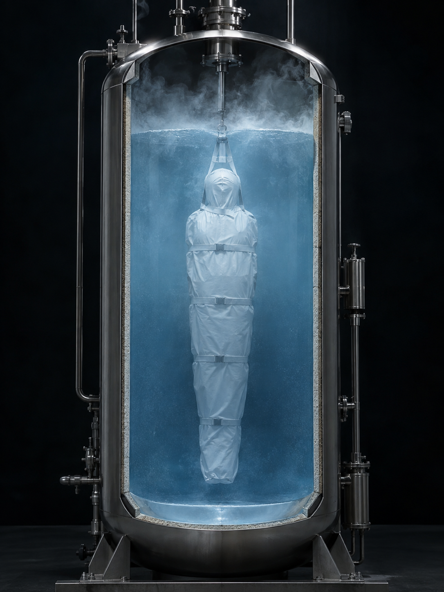
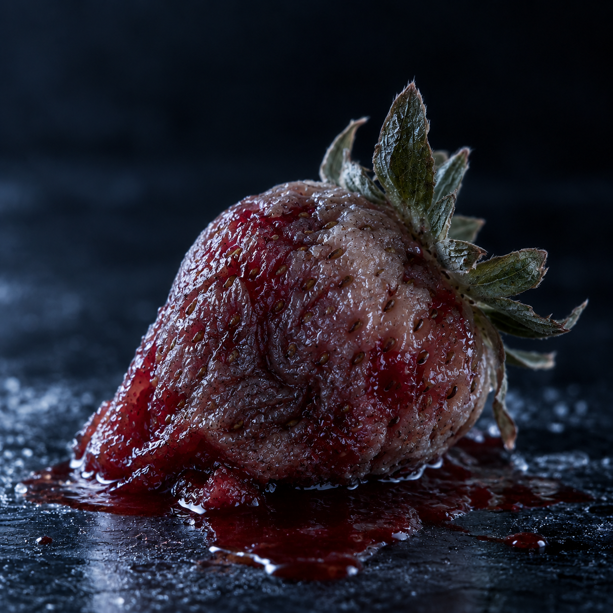
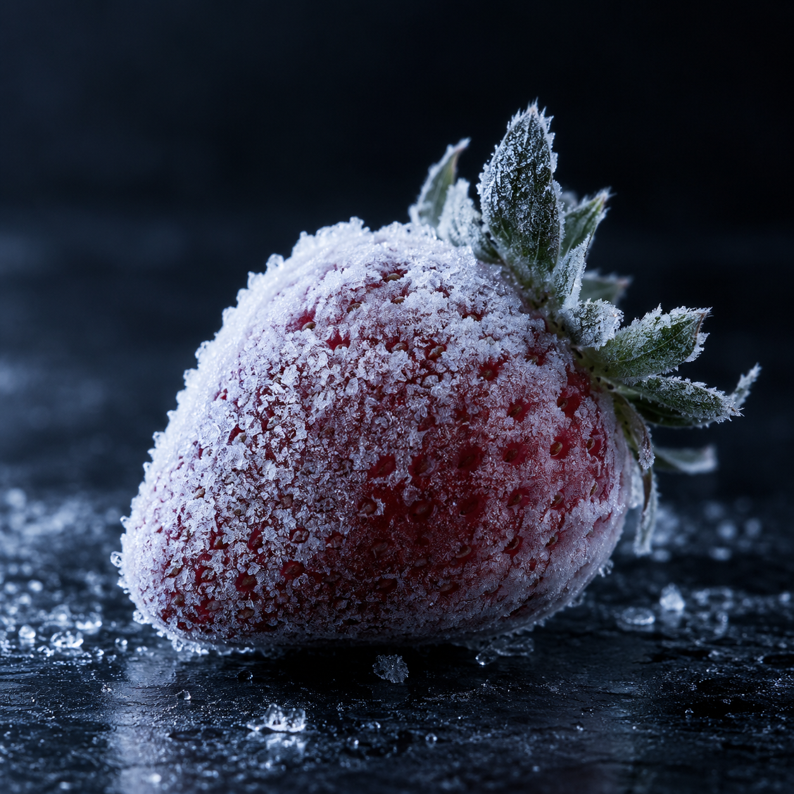

250년 뒤에
깨워주세요
2억원을 내고 냉동된 사람들이 있다. 순서를 기다리는 계약자는 4,000명이 넘는다. 그들이 통과하는 8시간과, 기다리기로 한 250년을 따라가 본다.
재현 이미지기사 내용을 바탕으로 제작했으며 실제 사진이 아닙니다.

0억원
전신 냉동보존 한 건에 드는 비용
호주 서던 크라이오닉스 기준 약 2억원(21만 호주달러). 연회비 약 34만원(350호주달러)은 별도다.
0명+
사망 후 냉동보존을 계약해 둔 전 세계 대기자
아직 살아 있는 사람들이다. 순서는 사망 시점이 정한다.
약 0명
지금 이 순간 액체질소 안에 있는 사람
미국 600러시아 200한국
미국에 600여 명, 러시아에 약 200명. 추산 범위는 800명에서 1,000명이다.
0명
한국에서 이 선택을 한 사람
국내에는 보존 시설이 없다. 2020년 혈액암을 앓던 80대 여성, 2021년 담도암을 앓던 40대 여성 등이 해외로 옮겨졌다.
2026.09.14 04:12법적 사망 확인 · 보존 절차 개시
시작점
냉동보존은 죽은 뒤에 시작된다.
법적 사망 선고가 나기 전에는 아무것도 할 수 없다.
살아 있는 사람에게 하면 살인이다.
심장이 멈춘다.
선고가 나오는 즉시 얼음주머니 등으로 몸을 식히기 시작한다. 체온을 떨어뜨려 시간을 버는 것이 첫 번째 일이다.
냉각
여기서부터는
분 단위 싸움이다.
체온이 높을수록 뇌는 빨리 무너진다.
처치가 늦을수록 되살릴 대상 자체가 줄어든다.
그래서 이송 내내 체온을 내린다.

1단계
피를 전부 빼낸다.
혈액을 그대로 두면 얼음이 된다.
큰 혈관에 관을 연결해 순환계를 비우고,
그 자리를 다른 물질로 채울 준비를 한다.
2단계
빈 혈관을 부동액으로 채운다.
농도를 한 번에 올리면 세포가 탈수로 망가진다.
옅은 농도부터 천천히 올린다.
이 단계에만 약 8시간이 걸린다.
목표
목적은 얼리는 것이 아니다.
얼음이 생기지 않게 만드는 것이다.
왜 그래야 하는지는 세포 안으로 들어가 보면 안다.


배율 ×1
재현 이미지특정 인물이나 기관의 실제 사진이 아닙니다.
이제 몸 안으로 들어간다.
세포 하나까지.
냉동보존의 성패는 시설이나 탱크가 아니라
이 크기에서 갈린다.
얼음
물이 얼면 결정이 자란다.
결정은 자라면서 세포막을 안쪽에서 밀어낸다.
밀린 막은 찢어진다.
찢어진 세포는 되돌릴 수 없다.
다시 녹여도 원래대로 붙지 않는다.
냉동보존이 가장 두려워하는 손상이다.
유리화 · vitrification
 얼음 결정
유리화
얼음 결정
유리화
부동액 농도를 충분히 올리면 물은 얼지 않고 결정 없이 유리처럼 굳는다. 조직은 딱딱해지지만 찢기지는 않는다.

재현 이미지보존 방식을 설명하기 위한 단면도입니다.
보관
몸을 거꾸로 세운다.
머리가 가장 깊은 곳에 놓인다.
액체질소가 새거나 증발하면 수면은 위에서부터 내려간다.
마지막까지 잠겨 있어야 할 부위를 맨 아래에 두는 것이다.
계약서에는 이렇게 적혀 있다.
“현재의 보존 방식이 신체에 되돌릴 수 없는
물리적 손상을 일으킬 가능성이 높다.”
시설 측이 계약서에 직접 명시한 문장이다.
36.5℃
액체질소가 끓는 온도까지 내려간다
체온에서 출발한다.
이 온도에서 시간은 사실상 멈춘다.
화학반응이 거의 일어나지 않는다.
100년을 두든 1,000년을 두든 상태는 같다.
전기도 필요 없다. 증발한 질소만 채워 넣으면 된다.
2026
계약서에 적힌 시간
250년 뒤에 무엇이 남아 있을까.
그때까지 존속할 기관도, 깨울 기술도 지금은 없다. 시설을 운영하는 사람들조차 이 점을 부정하지 않는다.
눌러보세요
그렇다면 깨어날 확률은 얼마일까.
시설 회장이 말한 숫자
0%
250년 뒤 되살아날 가능성
다만 그는 이것이 과학적 수치가 아니라 회사 측 전망일 뿐이라고 선을 그었다.
문제는 얼리는 게 아니다.
다시 녹이는 것이다.
과학계의 비유


냉동 상태 해동 뒤겉모습은 멀쩡하다. 그러나 녹이는 순간 속이 흐물흐물해지며 으깨진다. 얼 때 이미 세포막이 부서졌기 때문이다. 전문가들은 뇌도 같다고 말한다.
현재 기술
얼리는 기술은 있다.
정자와 난자, 배아의 저온 보존은 이미 자리를 잡았고, 쥐의 신장을 유리화 상태로 보존하는 기술도 나왔다.
되살리는 기술은 없다.
사람 전체를 얼렸다 녹이는 것은 현재 기술로
불가능하다는 것이 지배적인 견해다.
몸 바깥과 내부 장기가 서로 다른 속도로 식고,
고농도 냉동보호제 자체가 세포에 독성을 일으킨다.
그래서 이것은 치료가 아니라
베팅이다.
가장 풀기 어려운 것은 뇌다.
시냅스가 끊기거나 보존액이 고르게 퍼지지 않으면
기억과 인격이 통째로 사라진다.